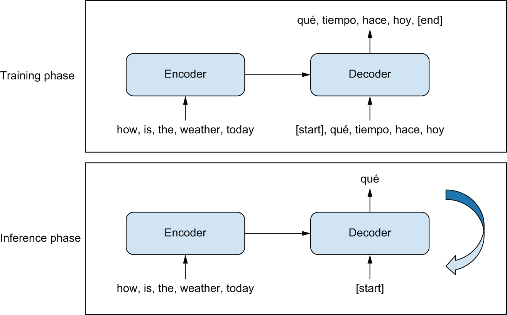
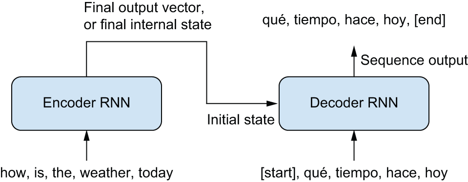
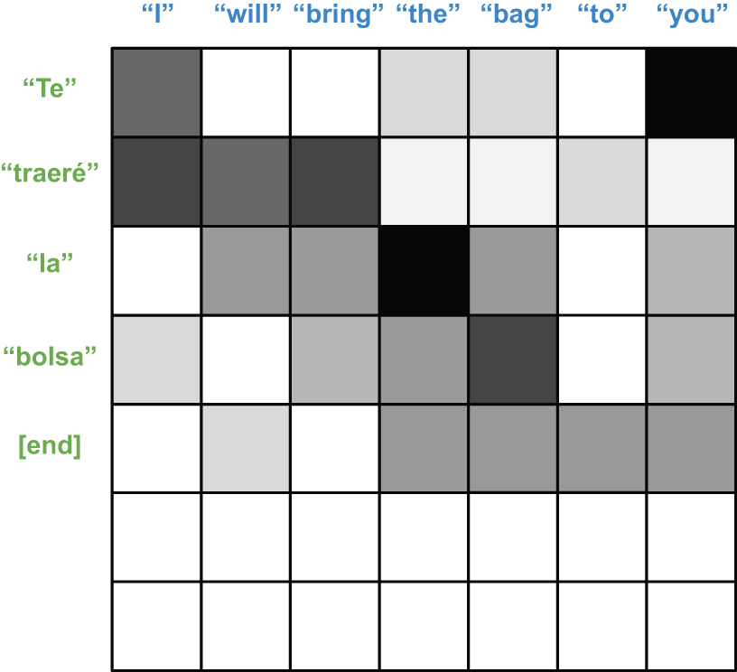
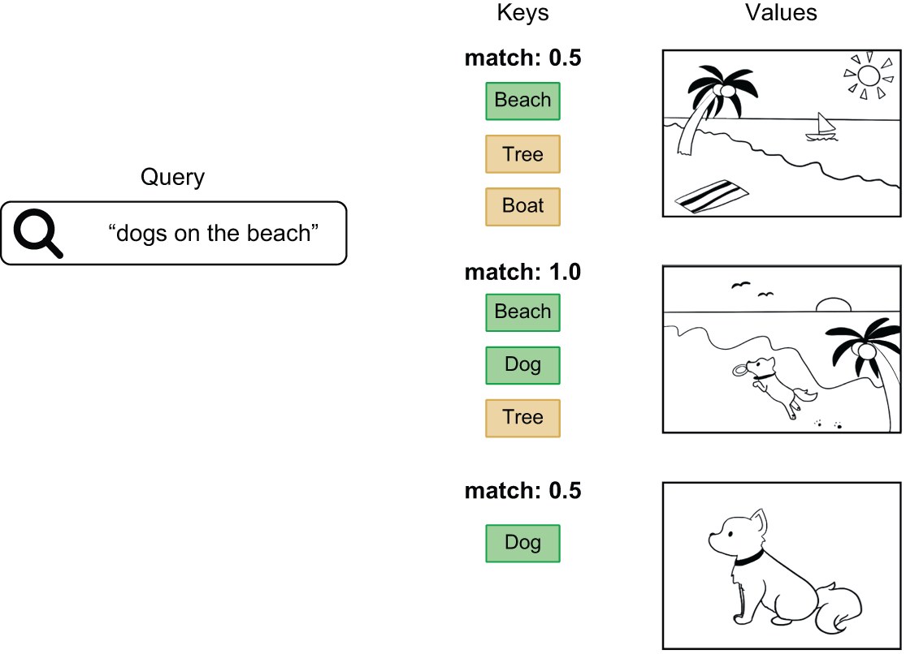
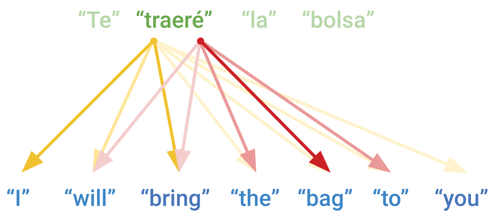
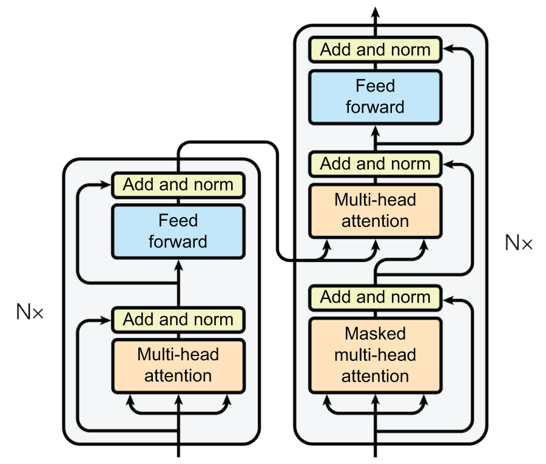

| Task | Output |
|---|---|
| Binary classification | One number |
| N-way classification | N numbers |
| Language modeling | A sequence of tokens, one step at a time |
Embedding → GRU → Dense softmax over charactersThe same weights, two very different runtimes:
| Phase | What happens |
|---|---|
| Training | Fixed 100-token sequences; GRU state handled inside the layer |
| Generation | One character at a time; GRU state passed explicitly between calls |
return_state=True, primed on the prompt, then loopedsample_weights mask padded positions so padding doesn’t pollute the loss
Encoder reads the entire source; decoder generates from [start] to [end]

Bidirectional(GRU) — rich source representationGRU with initial_state=encoder_output| Example | Total time | Per step |
|---|---|---|
| Shakespeare char LM | ~4 min | ~80 ms/step |
| Spanish RNN translation | ~28 min | ~90 ms/step |

softmax, then take a weighted sum of source vectors
Dense projection → attention becomes trainable
1/sqrt(head_dim) for stable softmax gradientslayers.MultiHeadAttention(num_heads, head_dim)Dense layers with ReLU — adds nonlinearity that attention alone lacksLayerNormalization pools over features within each sequence (not across the batch like BatchNorm)attention_mask excludes padding tokensuse_causal_mask=True) — no peeking at future target tokens
TransformerEncoder + TransformerDecoder → only ~58% accuracyPositionalEmbedding: token embedding + position embedding (learned)Real test-set outputs ([start]/[end] stripped):
RNN seq2seq
Transformer (my training run)
| Model | Idea |
|---|---|
| BERT | Masked language modeling — predict masked tokens from surrounding context |
| RoBERTa | Same encoder architecture; more pretraining data (160 GB vs 16 GB) |
keras_hub: Tokenizer.from_preset("roberta_base_en") + Backbone.from_preset(...)x[:, 0, :]) → dense → sigmoid| Example | Total time | Per step |
|---|---|---|
| Spanish Transformer (with positional embeddings) | ~6 min | ~6 ms/step |
| IMDb RoBERTa fine-tuning (transfer learning) | ~6 min | ~254 ms/step |
king - man + woman ≈ queen); large ones learn vector programs